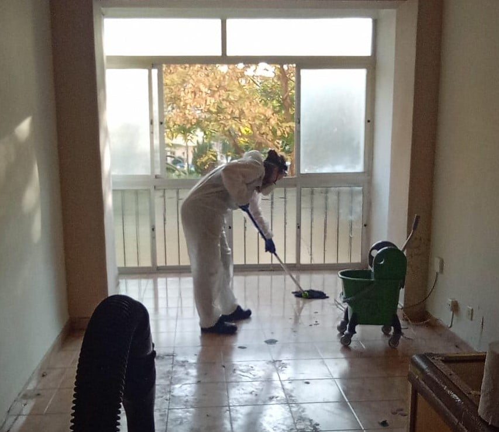

Les preguntamos a los expertos cuál es la mejor manera de limpiar nuestros hogares durante un brote viral. Después de que nos enseñaron la técnica adecuada (arriba), tuvimos algunas preguntas más:
¿Con qué frecuencia debo hacer esto?
Todos los días. (Entre limpiezas regulares).

¿Funcionarán las toallitas?
Si. Busque aerosoles o toallitas que prometan matar el 99.9 por ciento de los gérmenes.
¿Qué pasa si no tengo aerosoles o toallitas de limpieza?
El lavado con agua jabonosa debería hacer el truco: unas gotas de jabón para lavar platos a ocho onzas de agua. Aunque el jabón y el agua no matarán a todos los gérmenes, el lavado con agua jabonosa debería ser efectivo para eliminar el coronavirus y otros gérmenes de las superficies.
¿Qué es una superficie de alto contacto?
Todos esos lugares donde usted y su familia dejan un millón de huellas digitales todos los días. (Limpie las superficies del baño al final).
• Pomos de puerta
• Interruptores de luz
• Puertas de refrigerador y microondas • Tiradores de
cajones • Control
remoto de TV
• Mostradores y mesas donde cocina y come
• Manijas de inodoro
• Manijas de grifería
¿Cuán minucioso tengo que ser?
Un spray y una toallita vigorosa deberían hacerlo, pero no te vuelvas flojo aquí: quieres estar seguro de que has recorrido todo el pomo de las puertas, por ejemplo.
"Trato de no ser neurótico al respecto", dice el Dr. Kryssie Woods , epidemiólogo del hospital y director médico de prevención de infecciones en Mount Sinai West en Nueva York. “Pero lávese las manos cuando llegue a casa e intente limpiar algunas de esas áreas de alto contacto. Ese es un buen consejo incluso sin el coronavirus ".
¿Necesito usar guantes?
Se recomiendan guantes para la limpieza del hogar, pero si eso no es práctico, solo asegúrese de lavarse las manos antes y después de la limpieza.
Si estoy usando guantes, ¿realmente tengo que lavarlos después?
Sí, si vas a reutilizarlos. (Use guantes separados para el baño y los platos).
Una vez que haya terminado de limpiar:
• Lávese las manos enguantadas con agua y jabón.
• Secalos.
• Quítese los guantes y guárdelos.
• Luego lávese las manos desnudas.
¿De qué otra manera puedo estar seguro de que mi casa se mantiene limpia?
Cuando llegue a casa, quítese los zapatos, cuelgue el abrigo e inmediatamente lávese las manos durante 20 segundos con agua y jabón.